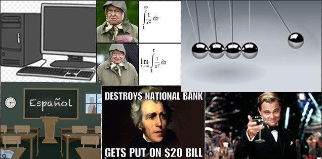

My Year in Academics!
These are the classes I took

This year I had a pretty heavy courseload, taking 5 weighted classes out of 6 total classes. There were definitely times where the workload was stressful, but overall I had a great time. I got to learn to code in APCSP, I learned a bunch of wonderful history in APUSH, had fun with my friends and teacher as I struggled through AP Calc BC, and laughed along with my friends as we were all totally perplexed in Honors Physics. Thankfully, I had some more chill classes like Spanish and English, where we worked dilligently but on content that wasn't too hard, so it was a nice break. Junior year is definitely pretty tough, but now that I'm done, I can reflect, and realize, that it was a pretty good time.